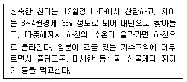
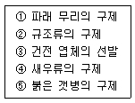
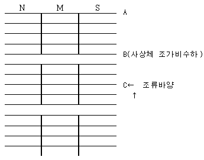

수산양식기사 (2009-07-26 기출문제)
1과목: 어류양식학
1. 가물치의 채란과 부화, 자어 관리 등에 대한 설명과 가장 거리가 먼 것은 ?
- 지름이 약 35㎝인 그릇에 맑은 물 1.5L를 넣고 약 5000개의 알을 수용한다.
- 수용 후에는 실내에 두고 온도를 20~25℃ 로 한다.
- 수온 20~25℃ 일 때 부화 후 3일이면 난황을 흡수하고 먹이를 먹기 시작한다.
- 수정된 알은 수온 20~25℃ 일 때 3~4일 만에 부화한다.
(정답률: 43%)

2. 물벼룩 발생을 위한 작업은 잉어의 산란예정 약몇 일전에 시작하는 것이 적당한가?
- 3~4일
- 7~8일
- 10~14일
- 20~30일
(정답률: 37%)
3. 폐쇄적 순환여과 양식장에서 수질관리를 위한 과정을 3단계로 할 때 다음 중 적합한 것은?
- 기계적 여과 → 생물학적 여과 → 소독
- 소독 → 기계적 여과 → 생물학적 여과
- 생물학적 여과 → 기계적 여과 → 소독
- 기계적 여과 → 소독 → 생물학적 여과
(정답률: 79%)
4. 다음 중 전세계적으로 가장 널리 양식되는 어류는?
- 방어
- 복어
- 숭어
- 참돔
(정답률: 87%)
5. 다음은 어떤 양식생물을 설명한 것인가?

- 은어
- 연어
- 황어
- 숭어
(정답률: 36%)
6. 은연어의 종묘생산에 필요한 사육적정수온은?
- 8~10℃
- 10~20℃
- 13~18℃
- 20~22℃
(정답률: 84%)
7. 100kg의 잉어에게 400kg의 사료를 먹여 500kg으로 성장시켰다고 하면 이 때의 사료계수는?
- 0.5
- 1.0
- 1.5
- 2.0
(정답률: 97%)
8. 잉어의 습성에 대한 설명 중 틀린 것은?
- 예정일에 산란시키기 쉽다.
- 숙성이가 없고 성장이 고르다.
- 산소결핍에 약하고, 월동 중에 몸무게의 감소가 크다.
- 영양실조 또는 소화기 장애에 의한 질병이 많다.
(정답률: 77%)
9. 로티퍼가 고밀도로 되면 배양수의 갑작스러운 변화로 대량 폐사가 일어나는데 그 원인이 아닌 것은?
- 용존산소의 증가
- 암모니아의 농도 증가
- COD 증가
- 현탁물질의 증가
(정답률: 76%)
10. 인공배합사료의 장점에 대한 설명으로 틀린 것은?
- 관리와 공급이 쉽고, 자동 사료 공급기의 사용으로 인건비를 절약할 수 있다.
- 상온(20~25℃)에서 1년 이상의 장기 저장이 가능하다.
- 사료공급량과 투여방법을 조절함으로써 생산량을 쉽게 조정해 나갈 수 있다.
- 생사료에 비하여 사료의 공급과 가격이 안정적이다.
(정답률: 86%)
11. 같은 크기의 어종을 축양하는데 있어 사육어의 체중에 대한 일간투이율(日間投餌率)이 가장 낮은 것은?
- 자주복
- 참돔
- 돌돔
- 방어
(정답률: 67%)
12. 잉어의 대형 종묘생산은 3~4㎝ 정도 되는 소형 종묘를 어느 정도의 크기로 키우는 과정인가?
- 5~10㎝
- 10~15㎝
- 15~20㎝
- 25~30㎝
(정답률: 71%)
13. 미꾸라지 인공채란 시 암컷의 선택 조건 중 틀린 것은?
- 복부가 적색을 띄고 투명감을 주는 것
- 복부가 미끄럽고 백색 반점이 있는 것
- 배가 부르고 약간 밑으로 처진 것
- 복부가 부드럽고 항문 부분이 빨간 것
(정답률: 83%)
14. 뱀장어 양식에서 양성용 종묘로 가장 좋은 것은?
- 선별에서 잡아낸 숙성어 종묘
- 작년산 이월 종묘
- 당년산 자연산 종묘
- 숙성어를 골라낸 나머지 종묘
(정답률: 60%)
15. 어류의 일반적인 1일 사료 공급량에 대해 바르게 설명된 것은?
- 건조사료 중량으로 몸무게의 10~15% 범위지만, 어릴 때에는 더 많이 먹는다.
- 건조사료 중량으로 몸무게의 1~15% 범위지만, 어릴 때에는 조금 적게 먹는다.
- 건조사료 중량으로 몸무게의 10~15% 범위지만, 어릴 때에는 조금 적게 먹는다.
- 건조사료 중량으로 몸무게의1~15% 범위이지만, 어릴 때에는 더 많이 먹는다.
(정답률: 70%)
16. 참돔의 일반적인 자연 산란 시기는?
- 1~3월
- 4~6 월
- 7~9월
- 10~12월
(정답률: 80%)
17. 무지개송어의 알을 수온 10℃ 전후에서 부화시킬 때 발안기가 되는 시기는 수정 후 며칠 정도인가?
- 4일 이후
- 8일 이후
- 12일 이후
- 16일 이후
(정답률: 69%)
18. 해산어류의 양성과 관련된 일반적 특징으로 틀린 것은?
- 방어 종묘 채집시 5~6월에 어획되는 8~50g 정도의 것이 가장 좋다.
- 넙치는 전장 5~6㎝의 것을 종묘로 하는 것이 좋다.
- 참돔은 5℃ 이하의 수온에서 약 80% 이상 월동 가능하다.
- 자주복의 성장은 1년째에 수온이 16℃로 저하될 때 까지의 기간이 왕성하므로 이 기간이 긴 곳을 양성장으로 택하는 것이 좋다.
(정답률: 84%)
19. 은어의 종묘생산시 부화 후 며칠간 로티퍼를 먹이는 것이 가장 적당한가?
- 약 20일간
- 약 50일간
- 약 70일간
- 약 100일간
(정답률: 40%)
20. 미꾸라지 채란시의 뇌하수체 주사 및 그 효과 등에 관한 사항으로 틀린 것은?
- 보통은 개구리 뇌하수체 20개를 1㎖의 링거액에 섞어서 미꾸라지 1마리당 0.1㎖ 씩 주사한다.
- 배지느러미와 가슴지느러미 중간 위치의 복강에 앞쪽으로 비스듬히 주사한다.
- 뇌하수체액에 5%의 탄닌산 용액을 조금 섞으면 효과가 더욱 좋다.
- 수온이 20℃ 이면 주사 후 6시간 후에는 대부분의 난이 완숙된다.
(정답률: 75%)
2과목: 무척추동물양식학
21. 굴 양식장 저질에서의 유독물질과 가장 거리가 먼 것은?
- NH3
- CH4
- SO3
- CO2
(정답률: 74%)
22. 비부착성 잠입 양식 종이 아닌 것은?
- 바지락
- 왕우럭
- 라마르크 대합
- 피조개
(정답률: 47%)
23. 피조개 부유유생에 관한 설명으로 틀린 것은?
- 남해안의 경우 주로 8월 중순부터 9월 중순 사이에 많이 나타난다.
- 일반적으로 중층이심에 많이 분포한다.
- 부유기간은 수온이 25℃ 내외의 경우 약 1주 정도이다.
- 와류현상이 있는 곳에 부유유생이 많다.
(정답률: 52%)
24. 가리비 양성장 선정에 있어서 그 지표종으로만 짝지어진 것은?
- 갯지렁이 - 염통성게 - 미더덕
- 사미류 - 보라성게 - 따개비류
- 미더덕 - 붕넙치류 - 별불가사리
- 연꽃성게 - 갯지렁이 - 둑중개류
(정답률: 84%)
25. 우리나라 남해안에서 문어를 양성할 때 반드시 피해야 할 시기는?
- 4월
- 6월
- 8월
- 10월
(정답률: 84%)
26. 대합(백합)의 이동이 많은 각장의 크기는?
- 1.0~2.0㎝
- 3.0~5.0㎝
- 7.0~9.0㎝
- 10㎝내외
(정답률: 84%)
27. 갯지렁이의 유생발달 순서로 옳은 것은?
- prototrochophore → metatrochophore → nectochaeta
- metatrochophore → prototrochophore → nectochaeta
- metatrochophore → nectochaeta → prototrochophore
- nectochaeta → prototrochophore → metatrochophore
(정답률: 61%)
28. 까막전복(둥근전복)의 완숙에 필요한 적산 수온은?(오류 신고가 접수된 문제입니다. 반드시 정답과 해설을 확인하시기 바랍니다.)
- 5500℃
- 3500℃
- 2500℃
- 1500℃
(정답률: 8%)
29. 해삼의 유생 이름은?
- Auricularia
- Nauplius
- Veliger
- Pluteus
(정답률: 76%)
30. 보리새우의 채란용 어미를 겨울에서 봄 사이에 탱크에서 사육관리 할 때 옳은 것은?
- 한 탱크에 암수를 함께 사육한다.
- 성숙을 돕기 위해 항상 어둡게 한다.
- 탈피를 돕기 위해 염분농도를 높여준다.
- 바닥에 잠입하지 못하도록 수온을 낮게 한다.
(정답률: 40%)
31. 진주조개의 생태에 대한 설명 중 옳은 것은?
- 전 세계적으로 온대구에 분포한다.
- 성패기에는 주로 15m 이심에 산다.
- 방란ㆍ방정은 24~25℃ 이상에서부터 시작된다.
- 방란ㆍ방정 후 약 12시간 내외에서 D형 유생이 된다.
(정답률: 48%)
32. 굴 유생 부착에 가장 많은 영향을 미치는 환경 요인은?
- 광선
- 염부
- 수온
- 먹이
(정답률: 46%)
33. 꽃게의 양성과정 중에 일어나는 심한 공식현상을 방지하기 위해서 해주어야 할 가장 좋은 대책은?
- 유수식 시설로써 해수의 유통을 좋게 할 것
- 해수비중과 투명도를 알맞게 해줄 것
- 먹이를 여러번 주고 해조류의 번식을 억제할 것
- 사육밀도를 적게 해주고 먹이를 충분히 줄 것
(정답률: 84%)
34. 바지락 종묘의 양성과 관리에 대한 설명 중 옳은 것은?
- 종묘의 크기는 작을수록 성장이 빠르다.
- 종묘의 방양은 성장이 좋은 간출시간이 2~4 시간대에 한다.
- 종묘양성은 중간육성기간을 반드시 거쳐야 한다.
- 종묘의 방양시기는 해적생물의 피해를 받지 않는 겨울이 가장 좋다.
(정답률: 19%)
35. 가리비 어장의 주요 해적생물이 아닌 것은?
- 붕넙치류
- 별불가사리
- 둑중개류
- 하이드로조아
(정답률: 62%)
36. 일반적으로 보리새우의 종묘 생산시 볼 수 있는 불완전 산란이 가장 많은 시기는?
- 5월 하순
- 6월 하순
- 7월 하순
- 8월 하순
(정답률: 38%)
37. 가리비 유생이 수정 후 부유생활을 거쳐 부착생활에 들어갈 때까지의 가간으로 가장 적합한 것은?
- 5~10일
- 10~20일
- 20~30일
- 30~40일
(정답률: 48%)
38. 개량조개에 대한 설명 중 틀린 것은?
- 발생시 해수비중이 1.022~1.024 정도가 좋다.
- 치패의 이식 장소는 간출시간이 긴 만조선 부근이 좋다.
- 종묘의 방양은 3~4월경이 좋다.
- 채취 시기는 12월에서 익년 4월경이 좋다.
(정답률: 68%)
39. Cyclotella nana를 주어서 피조개의 유생을 사육할 때 가장 알맞은 먹이 세포수는?
- 100~1000 개체/㎖
- 1000~10000 개체/㎖
- 10000~100000 개체/㎖
- 1000000~1000000 개체/㎖
(정답률: 43%)
40. 양성용 종굴로서 가장 알맞은 크기는?
- 1~2mm
- 3~18mm
- 20~35mm
- 43~58mm
(정답률: 66%)
3과목: 해조류양식학
41. 조가비 사상체의 각포자낭 형성이 가장 왕성한 시기는?
- 4~5월
- 5~6월
- 7~8월
- 8~9월
(정답률: 43%)
42. 다시마의 형태적 특징에 대한 설명으로 틀린 것은?
- 엽체의 내부 조직은 표층, 피층, 속으로 구분된다.
- 엽체의 비대 생장은 형성 표피에서 일어난다.
- 엽면에는 미역과 같이 털집이 산재한다.
- 점액 강도는 피층세초에서 나타난다.
(정답률: 72%)
43. 유용 해조를 위한 갯닦기에서 주 대상이 되지 않는 것은?
- 대형 다년생 해조
- 소형 다년생 해조
- 1년생 해조
- 말잘피류
(정답률: 67%)
44. 미역의 재생려을 이용한 수확에 대한 내용이 아닌 것은?
- 잎자르기 수확방법을 이용한다.
- 양성기간이 길고 종묘가 드물 때 이용한다.
- 절간생장의 원리를 이용한다.
- 양성기간이 짧고 미역부착량이 많을 때 이용한다.
(정답률: 43%)
45. 김 사상체 생태에 대한 사항 중 틀린 것은?
- 각포자의 방출은 15~24℃에서 이루어진다.
- 사상체의 생장은 2000~3000lx에서 가장 좋다.
- 각포자낭 형성에는 단일 작용이 있다고 인정한다.
- 생장, 각포자낭 형성, 각포자 방출에 대한 광주기 반응에서 참김은 암기 11~12시간이 적당하다.
(정답률: 45%)
46. 미역 채묘를 할 때 포자엽을 담가두는 최적 시간은?
- 20~30분
- 30~40분
- 50~60분
- 1~2시간
(정답률: 61%)
47. 김의 생육상태로 판단할 때 발앙기에 해당하는 수온은?
- 15~22℃
- 9~14℃
- 5~8℃
- 4℃이하
(정답률: 43%)
48. 다시마의 생활사에 대한 설명으로 틀린 것은?
- 이형 세대 교번을 한다.
- 포자체는 무성세대이다.
- 배우체는 유성세대이다.
- 아포체의 핵상은 n이다.
(정답률: 70%)
49. 미역의 종묘생산에 있어 가이식의 필요성에 해당되지 않는 것은?
- 아포체가 육안적인 크기로 될 때까지는 가이식 한 것이 본 양성 시설을 한 것보다 성장이 빠르다.
- 부니와 잡생물의 제거 작업 또는 싹녹음예방을 위한 대피 작업이 용이하다.
- 배우체의 성숙과 수정은 오랫동안 계속 일어나기 때문에 배우체가 씨줄틀과 떨어져 있는 것이 좋다.
- 씨줄을 어미줄에 감는 작업을 할 때 종묘의 손상을 줄일 수 있다.
(정답률: 52%)
50. 톳 양식에 관한 설명 중 옳은 것은?
- 톳은 조체가 크고 부력이 있어서 언제나 수면에 떠 있다.
- 톳은 영양번식성이 있어서 한번 시설한 친승을 해마다 바꿀 필요가 없다.
- 톳은 미역보다 성장이 늦다.
- 톳은 조수가 빠른 곳에서 주로 양식된다.
(정답률: 74%)
51. 냉동발의 장점과 가장 거리가 먼 것은?
- 초기 김 갯병의 피해 극복
- 김의 맛과 향의 향상
- 양식기간의 연장
- 해적 생물의 구제
(정답률: 71%)
52. 다시마 양식방법 중 경제성 및 기술상 문제로 우리나라에 적합하지 않는 것은?
- 촉성종묘배양에 의한 1년 양식
- 억제종묘배양에 의한 1년 양식
- 고온 적응 품종에 의한 양식
- 2년 양식
(정답률: 55%)
53. 우뭇가사리가 번시할 수 있는 적지가 아닌 것은?
- 연 평균 수온 10~20℃
- 비중 1.015 이상
- 하천수가 유입되는 장소
- 자연 암반이 발달된 장소
(정답률: 66%)
54. 2년생 다시마의 양식이 가능할 수 있는 주된 해황조건에 해당되는 것은?
- 9~13℃의 저수온기가 길다.
- 투명도가 15m 이상 되는 시기가 많다.
- 여름철 표층수온이 28℃ 이다.
- 12m 이상 깊이는 수온이 언제나 25℃이하이다.
(정답률: 73%)
55. 다음 중 김의 냉장에 알맞은 온도는?
- -10~-15℃
- -15~-25℃
- +5~-10℃
- -30℃이하
(정답률: 65%)
56. 2~3월에도 2차아에 의한 채묘가 가장 잘 되는 김품종은?
- 긴잎돌김
- 참김
- 방사무늬김
- 둥근김
(정답률: 36%)
57. 양식의 관점에서 볼 때 큰참김의 단점은?
- 파도에 약하다.
- 병해에 약하다.
- 색택이 나쁘다.
- 엽질이 거칠다.
(정답률: 60%)
58. 김양식장이 검조소(檢潮所)와 인접했을 때의 노출선 산출법은?
- 표준 노출선 산출법을 적용
- 현장 노출선 산출법을 적용
- 표준 노출선과 현장 노풀선의 평균치를 적용
- 조견표에 의한 s보정 후 현장 노출선을 적용
(정답률: 54%)
59. 김발을 구연산 희석액에 담그면 아래와 같은 효과가 있다. 육묘기에 기대하는 효과 범위는?

- ①, ②, ④
- ①, ②, ⑤
- ①, ②, ③
- ①, ③, ⑤
(정답률: 21%)
60. 그림과 같이 김의 인공채묘 시설을 하였다. 포자부착성적이 가장 좋지 않은 부분은?

- A 발의 N
- B 발의 M
- A 발의 S
- C 발의 S
(정답률: 31%)
4과목: 양식장환경
61. 어류의 호흡빈도에 대한 설명 중 틀린 것은?
- 어류의 호흡운동에 있어서 매 분당 아가미의 운동 횟수를 말한다.
- 온도의 변화에 의한 변동이 매우 크기 때문에 측정 시에는 반드시 온도를 제시해 놓는다.
- 오랜 시간 저 산소압의 수중에 생활하면 호흡빈도도 감퇴한다.
- 호흡에 의한 산소의 소비량을 단위시간에 단위체중으로 환산한 값으로 계산할 수 있다.
(정답률: 29%)
62. 가각류의 갑각(甲殼)을 구성하는 주성분은?
- 셀룰로우즈
- 키틴질
- 펙틴질
- 리그닌
(정답률: 63%)
63. 다음 해조류 중 동형세대 교번을 하는 것은?
- 우뭇가사리
- 다시마
- 미역
- 톳
(정답률: 42%)
64. 발생 단계 중 조에아(zoea)의 시기를 거치는 것은?
- 해삼
- 조개
- 성게
- 게
(정답률: 69%)
65. 금붕어의 품종 중 교배에 의하여 생겨난 종류는?
- 유금
- 캘리코
- 토좌금
- 꼬리쇠붕어
(정답률: 66%)
66. 갑각류의 제 3체절에 붙어있는 부속지는?
- 제 2촉각
- 큰 턱
- 작은 턱
- 제 1촉각
(정답률: 18%)
67. 경골어류의 심장 구성형태는?
- 2심방 2심실
- 1심방 2심실
- 2심방 1심실
- 1심방 1심실
(정답률: 38%)
68. 다음 중 분류가 잘못된 것은?
- 두족류 - 앵무조개
- 굴족류 - 뿔조개
- 복족류 - 따개비
- 부족류 - 재첩
(정답률: 54%)
69. 부레는 기도가 없고, 창자는 곧으며, 유문수가 없는 동갈치, 꽁치, 학공치 및 날치가 속하는 분류상의 무리는?
- 횟대류 (Scorpaeniformes)
- 송사리류 (Beloniformes)
- 청어류 (Clupeiformes)
- 실고기류 (Syngnathiformes)
(정답률: 38%)
70. 우뭇가사리류의 특징이 아닌 것은?
- 사분포자체에서는 가시모양의 작은 가지가 주걱모양으로 납작하게 되고, 그 부분에 사분 포자낭이 여러 개 만들어진다.
- 다년생이기 때문에 가을, 겨울철에는 볼 수 없다.
- 가지를 잡고 당기면 세로로 길게 찢어지는 것은 근양사 때문이다.
- 일반적으로 조체의 크기는 10~30㎝ 정도에 이르며, 형태의 변화가 심하다.
(정답률: 49%)
71. 놀래미의 자치어는 연안의 해조류가 무성한 앝은 곳에서 살다가 성장함에 따라 점차 깊은 곳으로 이동하는 습성을 보이는 데 이러한 회유형태에 가장 적합한 것은?
- 유기 회유
- 성육 회유
- 색이 회유
- 산란 회유
(정답률: 65%)
72. 갑각류의 탈피에 대한 설명 중 틀린 것은?
- 성장함에 따라 주기적으로 탈피한다.
- 성장의 한 과정으로 환경요인, 영양상태, 탈피 호르몬 등의 상호작용에 의해 일어난다.
- 키틴이나 탄산칼슘으로 된 외골격을 가지며, 탈피시에는 이것까지 벗어버린다.
- 탈피이전에 손상된 부위는 탈피 후 전혀 재생되지 않는다.
(정답률: 76%)
73. 다음 중 적조생물이 아닌 것은?
- Conyaulax sp.
- Isochrysis sp.
- Gymodinium sp.
- Heterosigma sp.
(정답률: 60%)
74. 홍조류만 가지는 세대는?
- 배우체 세대
- 포자체 세대
- 복상체 세대
- 과포자체 세대
(정답률: 47%)
75. 다음 중 수관부가 잘 발달되지 않은 종류는?
- 대합
- 바지락
- 피조개
- 우럭
(정답률: 46%)
76. 잉어란(卵)의 성질은?
- 부성 유구란
- 비점착란
- 점착 분리란
- 침성 밀집란
(정답률: 60%)
77. 어류의 성장 단계에서 종의 특징이 나타나는 시기로 반문과 색채가 성어와 다른 시기는?
- 전기자어기
- 후기자어기
- 치어기
- 미성어기
(정답률: 36%)
78. 어류의 삼투압조절에 관한 설명 중 옳은 것은?
- 담수어의 체액은 담수보다 삼투압이 높기 때문에 물은 아가미와 피부를 통해서 체내로 침입한다.
- 담수어는 물을 많이 마시며 신장을 통해서 다량의 오줌을 배출한다.
- 해산어는 물을 많이 마시지 않으며 신장을 통해서 염분을 배출한다.
- 해산어의 체액은 해수보다 삼투압이 높아서 체외에서 체내로 수분을 흡수하려 한다.
(정답률: 46%)
79. 어류의 위에 관한 설명 중 틀린 것은?
- 꽁치, 놀래기 등에는 위가 없다.
- 위의 내벽은 점막으로 덮여 있고 점막에는 많은 주름이 있다.
- 위에는 위선(胃腺)이 없어서 단백질 분해는 창자에서만 이루어진다.
- 어류의 위도 분문부, 맹나우, 유문부의 세 부분으로 구분할 수 있으나 종에 따라 그 경계가 각 부분의 발달에 차이가 있다.
(정답률: 59%)
80. 가오리류의 특징이 아닌 것은?
- 아가미의 형태는 반쪽아가미이며, 등지느러미 나 그 가시는 눕힐 수 없다.
- 항문과 비뇨생식공은 합쳐서 총배설강으로 되어 있다.
- 아가미 구멍이 적어도 일부는 머리의 옆에 열려 있다.
- 가슴지느러미는 크고, 수평으로 되어 몸통 부분의 옆면과 융합하여 몸의 일부를 형성한다.
(정답률: 20%)
5과목: 수산질병학
81. 수중 용존산소 농도에 대한 설명 중 틀린 것은?
- 물속의 염분 또는 오염물이 많을수록 많이 용해될 수 있다.
- 기압이 높을수록 많이 용해될 수 있다.
- “포화농도 - 현재농도 = 부족농도”가 클수록 많이 용해 될 수 있다.
- 물 온도가 낮을수록 많이 용해된다.
(정답률: 71%)
82. 양어지에 석회를 살포하면 나타나는 효과는?
- CaCO3 생성에 의한 CO2의 고정화
- 중금속 이온의 용해도 증가
- 유기물 입자의 분해성 증가
- 고분자 유기화합물의 고분자화
(정답률: 53%)
83. 수중 식물플랑크톤이 많이 이용하는 영양염류 중 바다에서 주로 부족하기 쉬운 것은?
- 질소
- 칼륨
- 인사
- 규산
(정답률: 62%)
84. 벤튜리 배수장치를 이용하기에 가장 좋은 수조 형태는?
- 원형 수조
- 수로형 수조
- 사각형 수조
- 부정형 수조
(정답률: 76%)
85. 원형지를 이용한 은어양식에서 못 중앙을 향한 바닥의 경사도로 가장 적합한 것은?
- 1/1~1/5
- 1/6~1/14
- 1/15~1/25
- 1/50~1/100
(정답률: 67%)
86. 생물학적 여과의 1차 대상 오염 성분은?
- 암모니아
- 질산염
- 이산화탄소
- 질소가스
(정답률: 79%)
87. 생물학적 여과에 대한 설명으로 틀린 것은?
- 생물학적 여과의 주목적은 물속에 녹아있는 암모니아를 제거하기 위함이다.
- 질산화과정에 관여하는 세균은 호기성 세균이다.
- 여과기능이 잘 일어나기 위해서는 충분한 산소가 보급 되어야 한다.
- 생물여과조는 옥외에 햇볕이 잘 드는 곳에 설치하여야 한다.
(정답률: 60%)
88. Free-Ammonia(NH3)에 대한 설명 중 틀린 것은?
- NH3의 농도가 높앙지면 어류에게는 더유독하다.
- NH3의 농도는 수온이 높아지면 증가한다.
- NH3의 농도는 pH가 증가하는데에 따라감소한다.
- NH3의 농도는 동일수온, 동일 pH일 때 해수보다는 담수가 높다.
(정답률: 76%)
89. 양어용수로 이용할 지하수에 함유되어 있는 탄산가스, 질소, 철 성분 등을 손쉽게 제거할 수 있는 일반적인 방법은?
- 포기(aeration)
- 응집침전제 첨가
- 모래여과
- 고온처리
(정답률: 74%)
90. 양식장의 황화수소에 대한 설명으로 옳은 것은?
- 황화수소는 혐기성 세균의 분해 산물이므로 물의 유통이 좋은 곳에서 생성된다.
- 황화수소가 다량 생성된 곳의 색깔이 황색으로 변한다.
- 황화수소가 다량 생선된 곳이라도 산소를 충분히 공급해주면 황화수소는 곧 분해되어 버린다.
- 황화수소는 나쁜 냄새를 풍기지만 수산 생물에 유독한 것은 아니다.
(정답률: 68%)
91. 양어지에서 물을 뺀 다음 마지막으로 남은 물고기를 모으기 위하여 배수구 앞에 만든 웅덩이는?
- 모임지
- 휴식터
- 집수부
- 축양지
(정답률: 61%)
92. 사육수조 내의 좋은 수질 유지를 위하여 양어장에서 생기는 고형 유기물의 빠른 제거를 위한 시설시 유의해야 할 점이 아닌 것은?
- 수조바닥의 구배는 고형 유기물이 중앙배수구로 빨리 밀려 갈 수 있는 정도로 충분하여야 한다.
- 주수구와 중앙 배수구의 거리는 멀수록 좋다.
- 침전조의 유기고형물이 모이는 곳은 될 수있는 한 물의 흐름이나 움직임이 없도록 해야한다.
- 주수구에서 들어오는 물은 사육동물에 스트레스를 주지 않을 정도에서 충분한 압력을 가지고 일정한 방향으로 나가 선회류를 일으킬 수 있도록 되어야 한다.
(정답률: 55%)
93. 경도를 나타내는 일반적인 대용 단위는?
- Ca2+mg/L
- Mg2+mg/L
- CaCO3mg/L
- epm
(정답률: 50%)
94. 수중의 이산화탄소에 관한 설명으로 옳은 것은?
- 수중의 경도가 높으면 수질이 불안정하다.
- 물속의 이산화탄소는 용존산소와 서로 비례적인 입장에 있다.
- 물속에서 그 농도가 높아도 어류의 산소운반 능력에는 영향이 없다.
- 수중의 경도가 낮으면 물속의 이산화탄소는 탄산으로 되어 물을 산성화시킨다.
(정답률: 44%)
95. 양식생물과 염분에 대한 내용 중 틀린 것은?
- 잉어, 메기 등의 담수어류는 해수가 어느 정도 섞인 기수(약 10‰이하)에서는 산란 및 번식은 잘 안되나 성장은 잘 된다.
- 틸라피아는 담수산이지만 해수보다 높은 염분에서 성장하는 종류도 있다.
- 숭어는 일반적으로 해수에서 양식하지만 물의 염분 농도가 담수와 같이 아주 낮은 경우에는 더 잘 자란다.
- 은어는 어릴때 바다로 내려가서 겨울을 지낸다
(정답률: 41%)
96. 일반적으로 담수순환여과시스템에서 새로 설치한 여과조의 질산화세균이 번식하여 여과기능을 낱타내기 시작하는데 걸리는 시간은? (단, 수온은 15℃ 이상임)
- 약 1주일
- 약 2주일
- 약 1달
- 약 2달
(정답률: 52%)
97. 다음 중 탱크 양식장에서 넙치를 기를 경우 용수로서 가장 좋은 것은?
- 내만의 수하식 패류 양식장의 저층 해수
- 심해의 물
- 지하 염분수
- 강하구 기수역의 용수
(정답률: 48%)
98. 최근의 수질 오염방지 대책 경향과 가장 거리가 먼 것은?
- 엄격한 배출 허용 기준
- 하수도 종말처리시설 건설
- 폐수의 배출 수질 감시의 강화
- 하천의 포기 정화
(정답률: 56%)
99. 무독성 적조에 의해서 어루가 폐사하는 현상과 가장 직접적인 관계가 있는 것은?
- 유기물의 증가
- 산소와 헤모글롤빈 결합 장해
- 세균의 발생
- 질소화합물 증가
(정답률: 54%)
100. 수질분석에 사용되는 비색법의 원리에 관한 설명 중 옳지 않은 것은?
- 사료 용액에 적당한 발색시약을 가해 목적 성분과 정색 반응을 일으켜 색의 농담을 비교해서 정량한다.
- 정색물질의 특성 파장에서 흡광도는 물질 농도에 비례한다.
- Lambert - Beer 법칙과 관계가 있다.
- 특정파장에서의 정색물질의 투과도는 그 물질의 농도에 비례한다.
(정답률: 55%)
수온 20~25℃ 일 때 부화 후 3일이면 난황을 흡수하고 먹이를 먹기 시작한다는 것은 가물치의 어린이가 언제부터 먹이를 먹을 수 있는지를 설명한 것이다. 이는 수온이 적절하다면 3일 후에 어린이가 먹이를 먹을 수 있음을 알려준다.